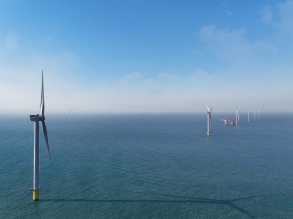

울산 부유식 해상풍력 이익, 시민 기본소득 재원이 될 수 있을까

알래스카·덴마크·스코틀랜드·신안 사례 점검…6.2GW 가정 연 약 8,343억 원 수익 추산도
2030년부터 차례로 가동될 울산 앞바다 6GW 규모 부유식 해상풍력의 발전이익을 시민 기본소득으로 나누자는 제안이 나왔다. 해외 사례로 석유 수익을 영구기금으로 쌓아 1982년 18세 이상 거주민에게 처음 배당한 미국 알래스카, 해상풍력 입찰 때 정부 지분 20%를 할당하는 덴마크, 운영 기간 MW당 해마다 지역공동체 기금을 내게 하는 영국 스코틀랜드가 꼽힌다. 국내에서는 2018년 조례로 주민 참여를 보장해 2024년 4분기까지 햇빛연금 누적 220억 원 이상을 지급한 전남 신안군이 꼽혔다. 김형근 (사)기본사회 울산남구위원장은 단지가 6.2GW, 이용률 45%이고 주민이 총사업비의 4%를 대출로 투자한다고 가정하면 연간 수익이 약 8,343억 원에 이른다고 추산했다.
시민에너지 관점
바다의 바람은 누구 한 사람의 것이 아닌 공유자원이고, 알래스카는 1982년 석유 수익 기금에서 18세 이상 거주민 모두에게 1,000달러씩 처음 배당했다. 해상풍력은 사업비가 커서 주민 몫을 만들기 어렵다는 반론이 나오지만, 덴마크의 정부 지분 할당이나 스코틀랜드의 지역기금처럼 제도로 몫을 떼어 둔 나라들이 있다. 다만 주민 몫을 대출로만 채우면 신안에서 지적된 낮은 실투자 문제를 그대로 안을 수 있어, 주민이 실제 지분을 갖는 설계가 함께 가야 할 것으로 보인다. 6GW 단지가 들어서기 전, 이익 공유의 원칙부터 조례와 입찰 조건에 담아야 한다.
울산시와 시의회는 6GW 단지가 가동되기 전에 이익 공유 원칙을 담은 조례를 먼저 만들어야 한다. 정부는 해상풍력 입찰 조건에 덴마크의 정부 지분 할당이나 스코틀랜드의 지역기금처럼 지역 몫을 넣는 방안을 검토할 수 있다. 주민 몫은 대출만으로 채우지 말고, 시민이 소액이라도 직접 출자할 수 있는 기금이나 협동조합 창구를 함께 열어야 한다. 시민단체는 알래스카와 신안 사례를 시민과 함께 공부하는 자리를 만들어 논의의 폭을 넓힐 수 있다.
출처: 울산저널 2025-07-17 이종호 원문 보기
蔚山の浮体式洋上風力の利益、市民の基本所得の財源になり得るか
アラスカ・デンマーク・スコットランド・新安の事例を点検…6.2GWと仮定すると年約8,343億ウォンの収益との試算も
2030年から順次稼働する蔚山沖の6GW規模の浮体式洋上風力の発電利益を、市民の基本所得として分け合おうという提案が出た。海外事例としては、石油収益を永久基金に積み立てて1982年に18歳以上の住民へ初めて配当した米アラスカ州、洋上風力の入札時に政府持ち分20%を割り当てるデンマーク、運営期間中にMWあたり毎年地域コミュニティー基金を拠出させる英スコットランドが挙げられる。国内では、2018年に条例で住民参加を保障し、2024年第4四半期までに太陽光年金を累計220億ウォン以上支給した全羅南道新安郡が挙げられた。キム・ヒョングン（社）基本社会蔚山南区委員長は、団地が6.2GW、設備利用率45%で、住民が総事業費の4%を融資で投資すると仮定すると、年間収益は約8,343億ウォンに達すると試算した。
市民エネルギーの視点
海の風は誰か一人のものではない共有資源であり、アラスカは1982年、石油収益の基金から18歳以上の住民全員に1,000ドルずつ初めて配当した。洋上風力は事業費が大きく住民分をつくるのが難しいとの反論も出ているが、デンマークの政府持ち分の割り当てやスコットランドの地域基金のように、制度で取り分を確保してきた国々がある。ただ、住民分を融資だけで賄えば、新安で指摘された実投資の低さという問題をそのまま抱えかねず、住民が実際に持ち分を持つ設計が並行して必要だとみられる。6GWの団地ができる前に、利益共有の原則をまず条例と入札条件に盛り込むべきだ。
蔚山市と市議会は、6GWの団地が稼働する前に、利益共有の原則を盛り込んだ条例をまずつくるべきだ。政府は洋上風力の入札条件に、デンマークの政府持ち分の割り当てやスコットランドの地域基金のような地域の取り分を入れる案を検討できる。住民の取り分は融資だけで賄わず、市民が少額でも直接出資できる基金や協同組合の窓口をあわせて開くべきだ。市民団体はアラスカや新安の事例を市民とともに学ぶ場を設け、議論の幅を広げることができる。
出典: Ulsan Journal 2025-07-17 Lee Jong-ho 原文を読む
蔚山浮式海上风电收益能否成为市民基本收入的财源
梳理阿拉斯加、丹麦、苏格兰和新安案例，并有按6.2GW测算年收益约8,343亿韩元的估算
有人提议，将于2030年起陆续投运的蔚山近海6GW规模浮式海上风电，其发电收益可作为市民基本收入分享。海外案例包括：将石油收益积累为永久基金、1982年首次向18岁以上居民分红的美国阿拉斯加；海上风电招标时向政府分配20%股份的丹麦；以及要求风电业者在运营期间每年按每MW向社区基金缴款的英国苏格兰。国内则举出全罗南道新安郡，该郡2018年以条例保障居民参与，到2024年第四季度累计发放阳光年金超过220亿韩元。（社）基本社会蔚山南区委员长 Kim Hyung-geun 估算，假设风电场规模6.2GW、利用率45%，居民以贷款投入总投资的4%，年收益将达约8,343亿韩元。
市民能源视角
海上的风不属于任何个人，是共有资源；阿拉斯加早在1982年就从石油收益基金中向18岁以上的全体居民首次各发放1,000美元。有人反驳说海上风电投资巨大，难以形成居民份额，但丹麦的政府股份分配、苏格兰的社区基金等，都是以制度预留份额的先例。不过，若居民份额只靠贷款填补，就可能沿袭新安被批评的实际投资偏低问题，因此似乎需要同时设计让居民真正持股的方案。在6GW风电场建成之前，就应把利益共享原则写入条例和招标条件。
蔚山市和市议会应在6GW风电场投运之前，先制定载明利益共享原则的条例。政府可以研究在海上风电招标条件中加入地方份额，例如丹麦的政府股份分配或苏格兰的社区基金。居民份额不应只靠贷款填补，还应同时开设让市民即使小额也能直接出资的基金或合作社窗口。市民团体可以组织市民共同学习阿拉斯加和新安的案例，拓宽讨论的范围。
来源: Ulsan Journal 2025-07-17 Lee Jong-ho 查看原文
Could Ulsan's floating offshore wind profits fund a citizens' basic income?
A look at Alaska, Denmark, Scotland and Sinan, plus an estimate of about 834 billion won a year assuming 6.2GW
A proposal has been made to share profits from the 6GW of floating wind planned off Ulsan, due to start operating in stages from 2030, with citizens as basic income. Overseas examples included Alaska, which first paid dividends to adult residents in 1982 from a permanent fund built on oil revenue; Denmark, which allocates a 20% government stake in offshore wind tenders; and Scotland, where wind operators pay into community funds every year per MW during operation. At home, the leading example is Sinan County in South Jeolla, which guaranteed resident participation by ordinance in 2018 and had paid more than 22 billion won in cumulative sunlight pensions by the fourth quarter of 2024. Kim Hyung-geun, head of the Basic Society's Ulsan Nam-gu committee, estimated annual returns of about 834.3 billion won, assuming a 6.2GW complex, a 45% capacity factor and residents investing 4% of total cost with borrowed money.
Citizen Energy View
Offshore wind is a shared resource that belongs to no single person, and Alaska first paid every resident aged 18 or older 1,000 dollars from its oil fund in 1982. Some argue offshore wind is too capital-intensive to carve out a resident share, but Denmark's government stake and Scotland's community funds show countries reserving a share by rule. Filling the resident share only with loans, however, risks repeating the low real investment criticized in Sinan, so a design in which residents hold actual equity appears to be needed as well. The principle of benefit sharing should be written into ordinances and tender terms before the 6GW complex is built.
Ulsan City and its council should first pass an ordinance setting out benefit-sharing principles before the 6 GW complex starts operating. The government could consider writing a local share into offshore wind tender conditions, along the lines of Denmark's state equity allocation or Scotland's community funds. The residents' share should not be filled with loans alone; funds or cooperative channels through which citizens can invest directly, even in small amounts, should be opened alongside. Civic groups could widen the debate by organizing sessions where citizens study the Alaska and Sinan cases together.
Source: Ulsan Journal 2025-07-17 Lee Jong-ho Read the original